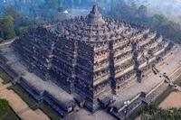
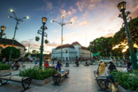
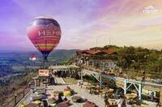

Candi Borobudur adalah candi Buddha terbesar di dunia. Dibangun pada abad ke-9, Candi Borobudur sekarang menjadi magnet yang mampu menarik jutaan wisatawan setiap tahun.
Candi Prambanan dibangun pada abad ke-9. Menjulang setinggi 47 meter dengan ornamen yang mengagumkan, kecantikan candi Hindu ini tak tertandingi.

Malioboro adalah jantung Kota Jogja. Tak heran bila banyak penginapan murah dekat Malioboro, meskipun sekarang banyak hotel berbintang.

HeHa Sky View sangat populer dan bisa dijangkau dalam 30 menit saja dari Kota Jogja. HeHa Sky View berisi tempat selfie, food stall, dan resto.